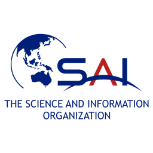

BLDC FOC 电机控制器 BLDC 无刷电机 FOC 控制器 使用 ESP32、DRV8313 三相驱动板及 ABZ 模式的 MT6701 磁性编码器， 为 2804 无刷电机设计了闭环磁场定向控制（FOC）速度控制器。 包含带实时速度滑块的 Python 图形界面及串口 Commander，支持在线 PID 调参。 技术：ESP32 · SimpleFOC · PlatformIO · C++ · Python · FOC · BLDC · PID 控制 查看仓库 →
AMCL vs ICP vs NDT 定位算法对比（AMCL / ICP / NDT） 分析 RPE/RTE、轨迹图及误差统计。 工具：ROS、PCL、Python（matplotlib）。 查看仓库 → |  阅读论文 →
自平衡机器人 两轮自平衡机器人 使用 PID 控制和实时 IMU 传感器融合设计并实现两轮自平衡机器人。 通过嵌入式硬件上的持续反馈控制实现稳定平衡。 技术：Arduino / 嵌入式 C · PID 控制 · IMU · 控制系统 ▶ 查看仓库 → | 观看视频 →